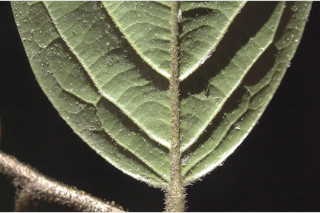
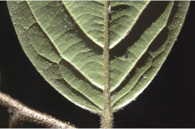
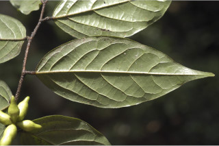
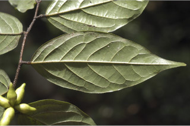

Large shrubs or small trees, up to 6 m tall.
ದೊಡ್ಡ ಪೊದೆಗಳು ಅಥವಾ 6 ಮೀ ಎತ್ತರದವರೆಗೆ ಬೆಳೆಯುವ ಸಣ್ಣ ಮರಗಳು.
വലിയ കുറ്റിച്ചടിയായോ ചെറുമരമായോ, 6 മീറ്റര് വരെ ഉയരത്തില് വളരുന്നു.
பெரிய குத்துச்செடி அல்லது சிறிய மரம் 6 மீ. உயரம் வரை வளரக்கூடியது.
Branchlets densely hirsute.
ಕಿರುಕೊಂಬೆಗಳು ಒರಟಾದ ರೋಮರಹಿತವಾಗಿರುತ್ತವೆ.
ഉപശാഖകള് കനത്ത രോമാവൃതമാണ്.
சிறிய நுனிக்கிளைகள் அடர்ந்த நீண்ட உறுதியான உரோமங்களுடையது.
Leaves simple, alternate, distichous; petiole nearly terete, densely hirsute 0.3 to 0.5 cm long; lamina 5-15 x 3-7 cm elliptic to narrow ovate, apex acuminate-caudate with blunt tip (acumen 0.8 to 2.2 cm long), base acute to rounded, glabrous above, margin ciliate when young, chartaceous; midrib impressed above, hirsute; secondary_nerves 6-8 pairs, strong, ascending; tertiary_nerves reticulate.
ಎಲೆಗಳು ಸರಳ, ಪರ್ಯಾಯ ಜೋಡನಾ ವ್ಯವಸ್ಥೆಯಲ್ಲಿರುವಂತಹವೂ ಹಾಗೂ ಕಾಂಡದ ಎರಡೂ ಕಡೆ ಎದುರು ಬದರಿನ ಲಂಬಸಾಲಿನಲ್ಲಿರುತ್ತವೆ.; ಎಲೆ ತೊಟ್ಟುಗಳು 0.3 ರಿಂದ 0.5 ಸೆಂ.ಮೀ. ಉದ್ದವಿರುತ್ತವೆ. ಎಲೆ ಪತ್ರ 5 - 15 × 3 - 7 ಸೆಂ.ಮೀ. ಆಕಾರದಲ್ಲಿ ಅಂಡವೃತ್ತದಿಂದ ಇಕ್ಕಟ್ಟಾದ ಅಂಡಾಕಾರದಲ್ಲಿದ್ದು ಕ್ರಮೇಣ ಚೂಪಾಗುವ ಬಾಲರೂಪಿ ತುದಿಯನ್ನು ಹೊಂದಿರುತ್ತವೆ. ತುದಿ ಮೊಂಡಾದ ಮೊನಚು ಮುಳ್ಳನ್ನು ಹೊಂದಿರುತ್ತದೆ (ಚೂಪಾದ ಭಾಗ 0.8 ರಿಂದ 2.2 ಸೆಂ.ಮೀ. ಉದ್ದವಿರುತ್ತದೆ); ಎಲೆಯ ಬುಡ ಚೂಪಾಗಿರುವುದರಿಂದ ಹಿಡಿದು ಗುಂಡಾಕಾರದವರೆವಿಗೆ ಇರುತ್ತದೆ ; ಎಲೆ ಪತ್ರದ ಮೇಲ್ಭಾಗ ರೋಮರಹಿತವಾಗಿರುತ್ತದೆ. ಎಳೆಯ ಎಲೆಯ ಅಂಚು ಸ್ಪಂದನಾಶೀಲ ರೋಮಗಳಿಂದ ಕೂಡಿರುತ್ತವೆ. ಪತ್ರದ ಮೇಲ್ಮೈ ಕಾಗದವನ್ನು ಹೋಲುವಂತಿರುತ್ತದೆ. ಪತ್ರದ ಮೇಲ್ಭಾಗದಲ್ಲಿ ಅಚ್ಚೊತ್ತಿದ ಮಧ್ಯನಾಳವಿದ್ದು ಒರಟಾದ ರೋಮಸಹಿತವಾಗಿರುತ್ತವೆ.; ಎರಡನೇ ದರ್ಜೆಯ ನಾಳಗಳು 6 ರಿಂದ 8 ಧೃಢವಾದ ಜೋಡಿಗಳಿದ್ದು ಆರೋಹಣವು ವ್ಯವಸ್ಥೆಯಲ್ಲಿರುತ್ತವೆ. ತೃತೀಯ ದರ್ಜೆಯ ನಾಳಗಳು ಜಾಲಬಂಧ ನಾಳವಿನ್ಯಾಸದವು.
ഇലകള് ലഘുവും, ഏകാന്തര ക്രമത്തില്, തണ്ടിന്റെ ഇരുഭാഗത്ത് മാത്രമായി അടുക്കിയിരിക്കുന്നു; കനത്ത രോമാവൃതവും, ഏതാണ്ട് ഉരുണ്ടുമിരിക്കുന്ന ഇലഞെട്ടിന് 0.3 മുതല് 0.5 സെ.മി വരെ നീളം; പത്രഫലകത്തിന് 5 മുതല് 15 സെ.മി വരെ നീളവും 3 മുതല് 7 സെ.മി വരെ വീതിയും, ആകൃതി ദീര്ഘവൃത്താകാരം മുതല് വീതികുറഞ്ഞ അണ്ഡാകാരവും, പത്രാഗ്രം മുനപ്പില്ലാത്ത വാലോടു കൂടിയതുമാണ് (വാലിന് 0.8 മുതല് 2.2 സെ.മി വരെ നീളം), പത്രാധാരം കൂര്ത്തതു മുതല് വൃത്താകാരം വരെ ആണ്, മുകള് ഭാഗത്ത് അരോമിലമാണ്, അരികുകള് ഇളതായിരിക്കുമ്പോള് രോമിലമാണ്, കടലാസ് പോലത്തെ പ്രകൃതം, മുഖ്യസിര മുകളില് വ്യക്തവും, നിറയെ രോമാവൃതവുമാണ്; ദ്വിതീയ ഞരമ്പുകള് 6 മുതല് 8 വരെ ജോഡികള്, ഉറച്ചതും, ആരോഹണ ക്രമത്തിലും ആണ്; ത്രിതീയ ഞരമ്പുകള് ജാലിക തീര്ക്കുന്നു.
இலைகள் தனித்தவை, மாற்றுஅடுக்கமானவை, இருநெடுக்கு வரிசையிலையடுக்கம் (டைஸ்டிக்கஸ்); இலைக்காம்பு குறுக்குவெட்டுத் தோற்றத்தில் வளையமானது, அடர்ந்த நீண்ட உரோமங்களுடையது, 0.3. முதல் 0.5 செ.மீ. நீளமானது; இலை அலகு 5-15 X 3-7 செ.மீ. நீள்வட்டம் முதல் குறுகிய முட்டை வடிவம், அலகின் நுனி அதிக்கூரியது மற்றும் மழுங்கிய முனை (முனை 0.8 முதல் 2.2 செ.மீ. நீளமானது), அலகின் தளம் கூரியது முதல் வட்ட வடிவானது, மேற்பரப்பு உரோமங்களற்றது, புதிய இலையின் விளிம்பு உரோமங்களுடையது, சார்ட்டேசியஸ் (தாளை போன்றது); மையநரம்பு மேற்பரப்பில் அலகின் பரப்பைவிட பள்ளமானது, நீண்ட உறுதியான உரோமங்களுடையது; இரண்டாம் நிலை நரம்புகள் 6-8 ஜோடிகள், உறுதியானது; மூன்றாம் நிலை நரம்புகள் வலைபின்னல் போன்றது.
Flowers solitary, axillary, sessile, velvety cream tomentose.
ಹೂಗಳು ಒಂಟಿಯಾಗಿ ತೊಟ್ಟುರಹಿತವಾಗಿದ್ದು ಅಕ್ಷಾಕಂಕುಳಿನಲ್ಲಿರುತ್ತವೆ ಹಾಗೂ ಕೆನೆಬಣ್ಣದ ಮಖಮಲ್ಲನ್ನು ಹೋಲುವ ದಟ್ಟವಾದ ಮೃದು ತುಪ್ಪಳ ಸಹಿತವಾಗಿರುತ್ತವೆ.
കക്ഷങ്ങളില് ഒറ്റക്കായുണ്ടാകുന്ന പൂക്കള്, അവൃന്തവും, ക്രീം നിറത്തിലുള്ള വെല്വെറ്റ് രോമങ്ങള് നിറഞ്ഞതുമാണ്.
மலர்கள் தனியானது, இலைக்கோணங்களில் அமைந்தவை, காம்பற்றது, மென்மையான கிரீம் நிறமான அடர்ந்த பின்னிய உரோமங்களுடையவை.
Clustered few-seeded berries, subsessile, torulose, hirsute when young.
ಬೆರ್ರಿಗಳು ಗುಂಪಾಗಿದ್ದು ಕೆಲವೇ ಬೀಜಗಳನ್ನೂ ಹಾಗೂ ತೊಟ್ಟು ತೀರ ಸಣ್ಣದಾಗಿದ್ದು ಮಣಿಗಳ ಹಾಗೂ ನಿಯಮಿತವಾಗಿ ಜೋಡಿಸಲ್ಪಟ್ಟ ಊದಿದ ಗಂಟುಗಳನ್ನು ಹೊಂದಿದ್ದು ಮತ್ತು ಒರಟಾದ ತುಪ್ಪಳವನ್ನು ಹೊಂದಿರುತ್ತವೆ.
കുറച്ചു വിത്തുകള് മാത്രമുള്ളതും, ഉപഅവൃന്തവും, അവിടവിടെ വീര്ത്തതുമായ സരസഫലങ്ങള് കൂട്ടമായുാകുന്നു, ഇവ ഇളയതായിരിക്കുമ്പോള് നിറയെ രോമാവൃതവുമാണ്.
கொத்தான சில விதையுள்ள முழுச்சதைகனி (பெர்ரி), மிகச்சிறிய காம்புடையது, டோருலோஸ், இளம்காய்கள் உரோமங்களுடையவை.


 


 
